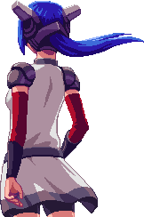

hi im vi this is my hand
hi
theres not much here i'm still planning this sorry oops lol
my name is vi and i am a 21 year old biohacker
we're a group of people that "hack" our bodies through self experimentation. my experiments revolve around improving the human body through artificial input and output.
my current main project is a pair of modular headphones that sync to the users heartrate. the headphones have two fans that spin to the rhythm of the heart,
and blink red when the user has an arrythmia attack.
the self experiment im currently participating in uses electrodes in my hand to stimulate the nerves over a period of time. at the end of the experiment, we are seeing if it causes any changes in the muscle and nerve sensitivity in that area. the objective of this experiment is to understand whether or not it's safe for prolonged periods of time. if it is, i'm going to see if it would be viable for strengthening certain muscles in people with missing limbs to help make more responsive robotic prosthetics.
why i do the things that i do
unfortunately i can't provide an explanation for this. human curiosity is a battle i fight every day. i've been on these tech shenanigans for years, runs in the family.


more on me
- i play lots of games but i will kick your ass in smash and rivals
- im a web designer for wsu
- my favorite food is oyama's poke bowls
- i worked on a game called crosscode for a few years in high school
- i made my first website when i was 12 and started programming when i was 14 with ruby
- i also got my first MTA certification when i was 17
- my brother graduated from CWU with a CS degree and im following in his foosteps. unfortunately im way cooler so sucks for him
- i have a motorcycle license
- i dont consider myself an artist but i've done pixel art extensively (note clouds). i used to be a graphic designer but switched to web design after a year at wsu
- when i was little i wanted to be a pilot, but as i grew up i found out i liked computers and went with that instead. i also like money so maybe one day i'll be able to afford a biplane of my own.
- my favorite thing ever is clouds im sorry if you dont understand i just think they're really cool
- embarassing but funny thing is that my software career really started with minecraft mods. my brother found out about minecraft in 2008 on an obscure forum site and i got super obsessed with it in 2011 or so. i don't play it anymore but the beta days filled my time back then. since then i've also done lots of stardew valley modding when i wasnt working on my own game.
- i also wanted to be a game designer for awhile but i learned i hate large gaming companies and would rather do my own fun little projects
- in continuation of the above, im working on my own game which is a street figher type fighting game where the characters fight with a unique food item. the main character has a giant baguette sword and another woman has an asparagus lance. i will probably never finish it.


